Google Maps ピン刺しアプリの基本的な使い方です。Googleアカウントの登録から、住所データの入力、地図へのピン刺し、保存したグループの開き方まで、画面付きで紹介します。
1. Googleアカウントを登録する
-
① 「Googleアカウントを登録」を開く
トップ画面右上の「Googleアカウントを登録」を押します。PCとスマホで同じデータを使うために、まず登録してください。
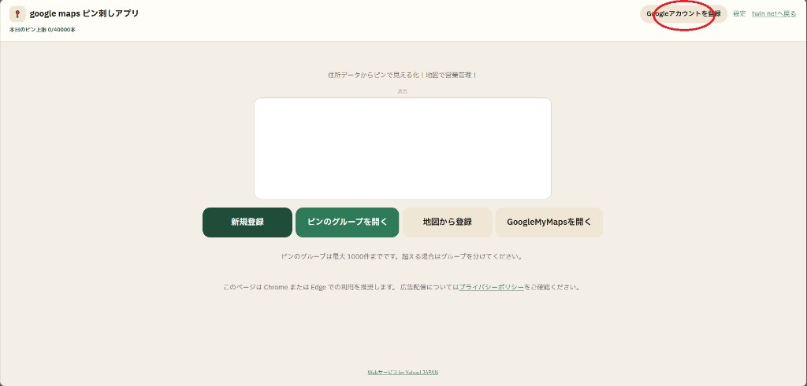
① Googleアカウントを登録 -
② メールアドレスを入力して登録
Googleアカウント（メールアドレス）を入力し、「Googleで確認して登録」を押します。登録すると、ピンのグループをGoogleドライブに保存できます。
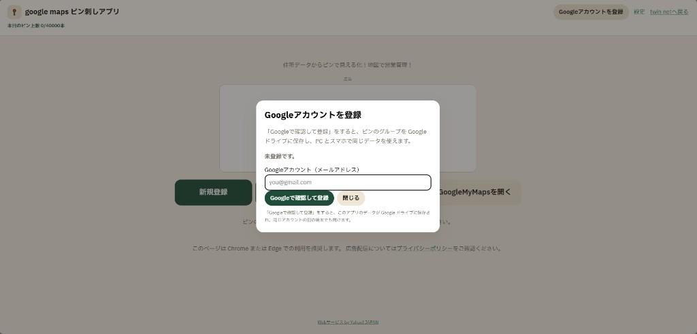
② Googleアカウント登録画面 -
③ Googleアカウントを選択
Googleのログイン画面で、利用するアカウントを選択します。
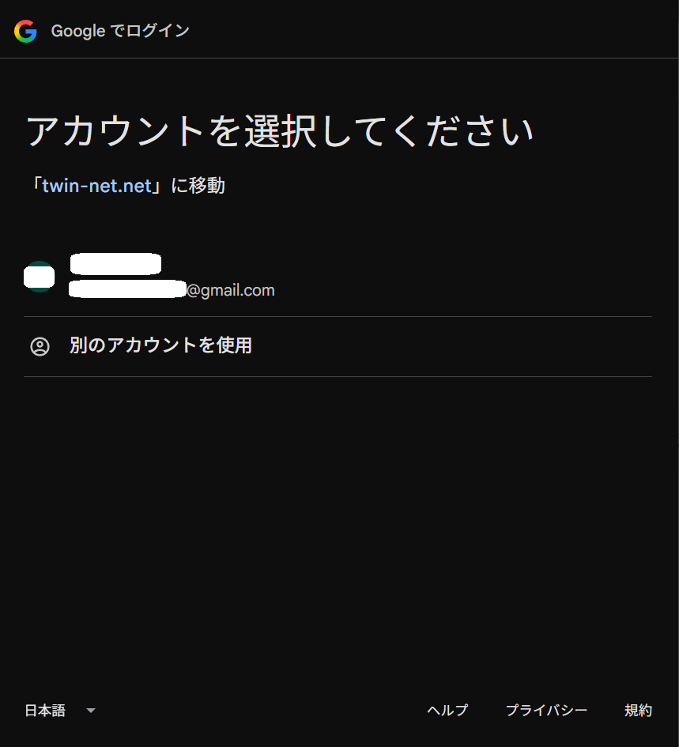
③ アカウントを選択 -
④ 登録を確認して操作を選ぶ
右上にメールアドレスが表示されていれば登録完了です。「新規登録」で新しいピンのグループを作成、「ピンのグループを開く」で保存済みのグループを開けます。
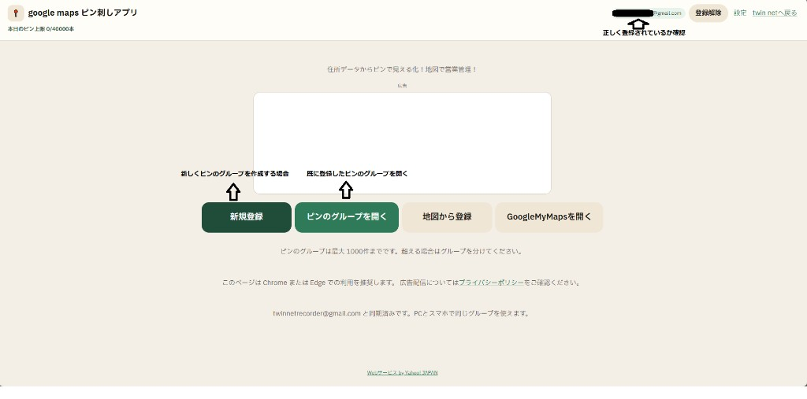
④ 登録確認とメニュー選択 -
⑤ スポンサー広告が表示されたら「続ける」
ページ移動の前に広告が表示されることがあります。「続ける」ボタンに変わったら押してください。
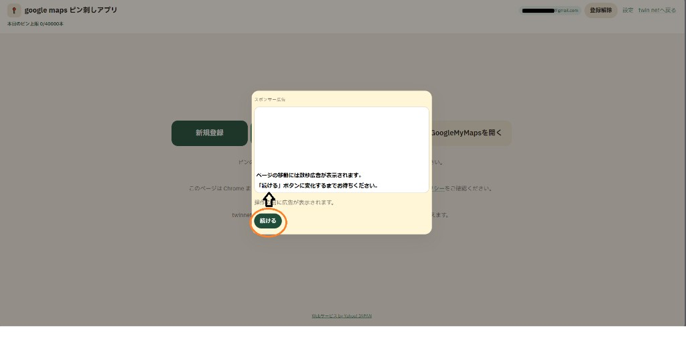
⑤ 広告のあと「続ける」
2. ピンのグループを作成してデータを入力する
-
⑥ ピンのグループ名を記入
「ピンのグループ名」に名前を入力します。営業報告や顧客管理など、後から分かりやすい名前にすると便利です。
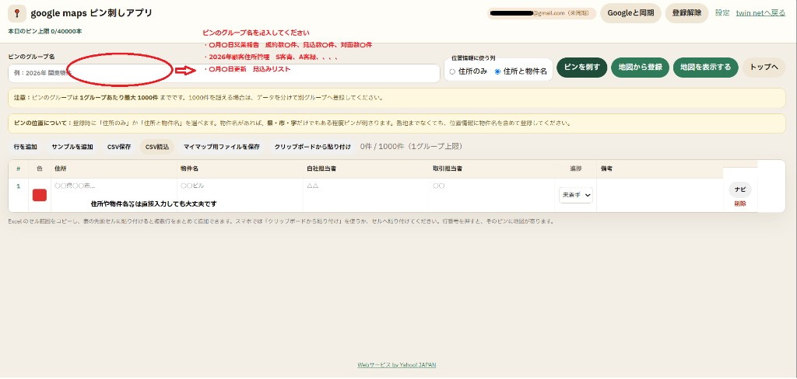
⑥ グループ名を入力 -
⑦ 入力画面の見方
住所・物件名・担当者・進捗・備考などを表形式で管理できます。位置情報に使う列は「住所のみ」または「住所と物件名」から選べます。
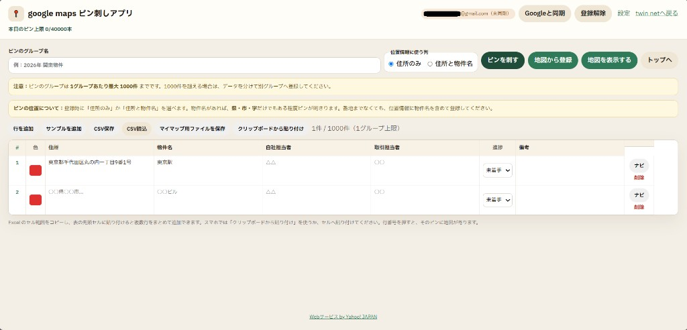
⑦ データ入力画面 -
⑧ 物件サイトから一つずつコピーしてもOK
営業先の情報を一つずつコピーして、住所や物件名に貼り付けても問題ありません。番地が分からなくても、物件名と大まかな住所があれば、ある程度ピンを刺せます。
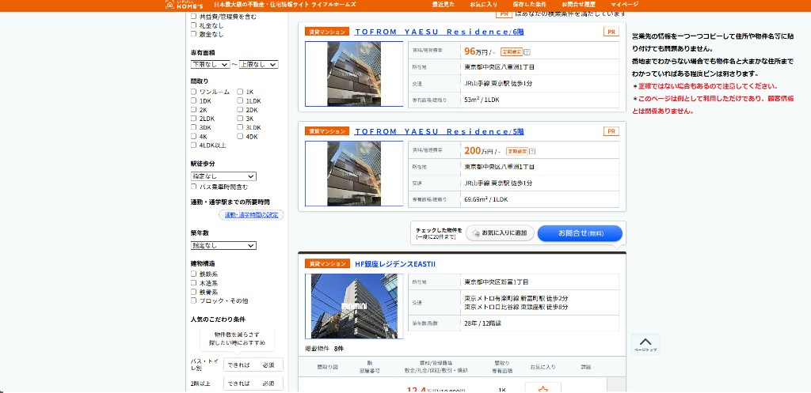
⑧ 手動コピーでの登録例 -
⑨ Excelの住所データを用意
Excelなどで住所・物件名を管理している場合は、その範囲をコピーしてアプリに渡せます。
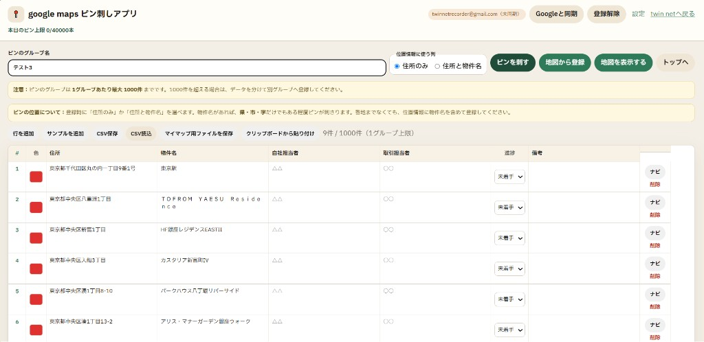
⑨ Excelデータの例 -
⑩ アプリ側にデータを貼り付け
Excelでコピーした範囲を、表へ貼り付けるか「クリップボードから貼り付け」で一括登録できます。
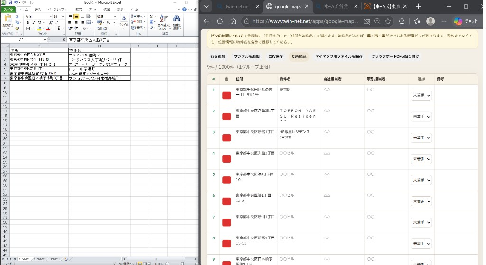
⑩ コピー＆ペースト -
⑪ 貼り付け後の一覧を確認
住所や物件名が表に入ったら、色・担当者・進捗なども必要に応じて整えます。
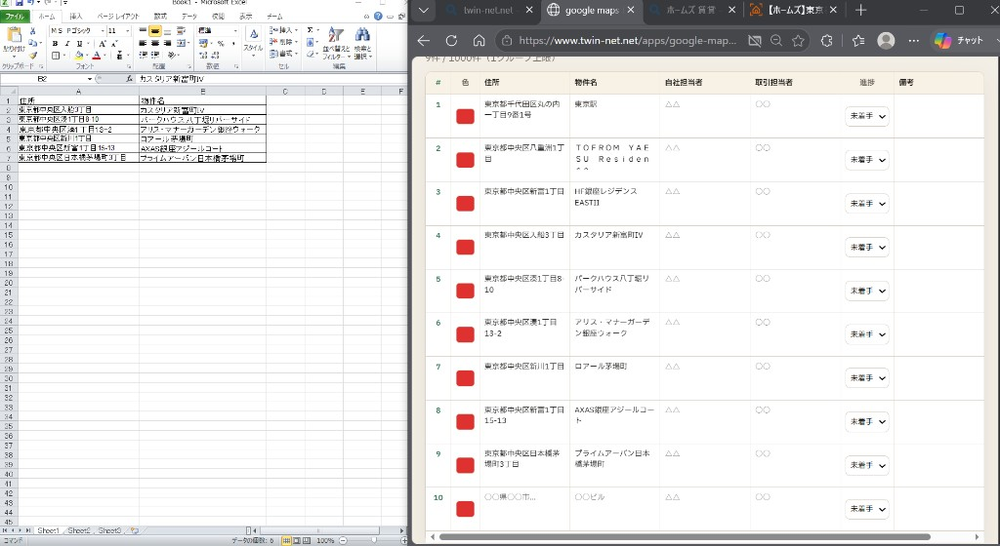
⑪ 貼り付け後の確認 -
⑫ データ入力を完了する
グループ名と住所一覧がそろったら、「ピンを刺す」の準備完了です。1グループあたり最大1,000件まで登録できます。
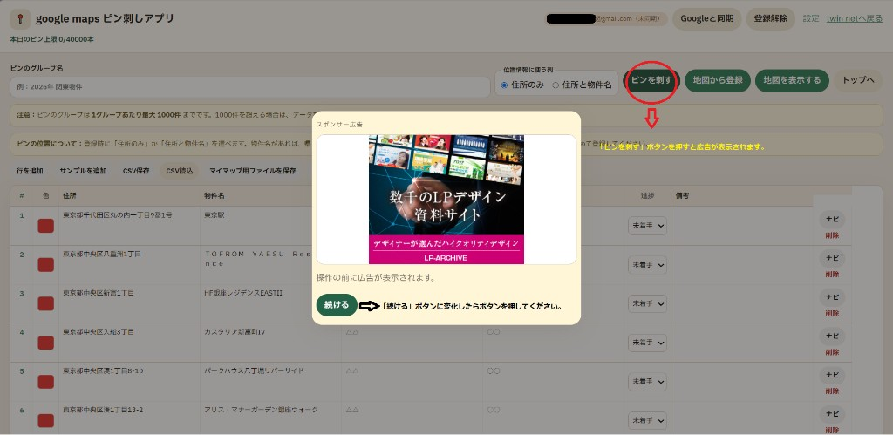
⑫ 入力完了の例
3. 地図にピンを刺す
-
⑬ 位置情報の取得を待つ
「ピンを刺す」を押すと、住所から位置を調べます。件数が増えると少し時間がかかるので、完了までお待ちください。
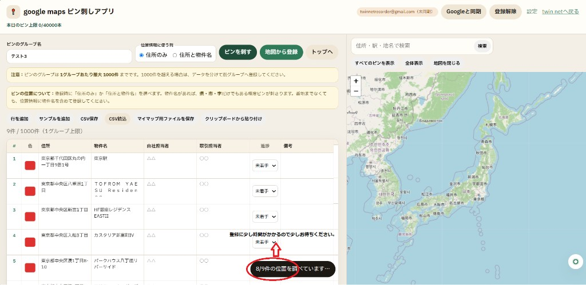
⑬ 位置情報の取得中 -
⑭ 地図ができたら確認
「地図ができました」と表示されたら完了です。右側（または下）の地図にピンが表示されます。必要ならマイマップ用ファイルも保存できます。
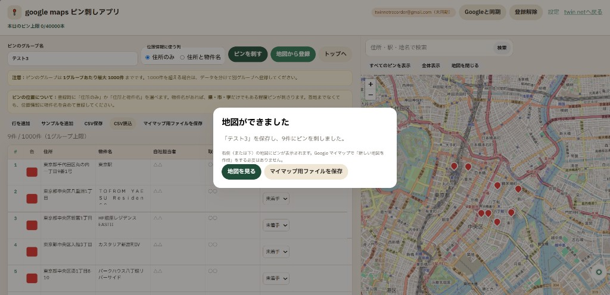
⑭ 地図の完成 -
⑮ 一覧と地図を行き来する
行番号を選ぶと対応するピンが強調され、地図のピンを選ぶと対応する行が選ばれます。地図を長押しして直接ピンを追加することもできます。
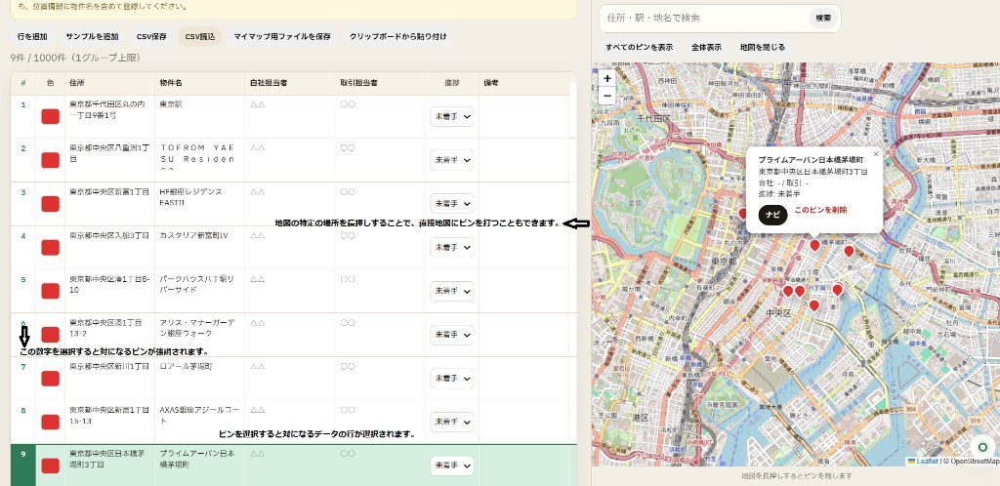
⑮ 一覧と地図の連携 -
⑯ 保存したグループを開く
トップの「ピンのグループを開く」から、Googleドライブに保存したグループを開けます。一覧に出ない場合は「Googleと再同期」を試してください。
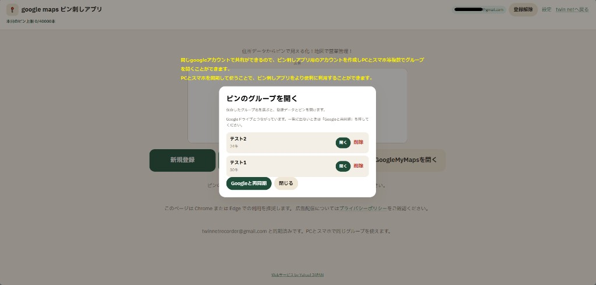
⑯ 保存グループを開く
補足
- このページは Chrome または Edge での利用を推奨します。
- 1グループあたり最大1,000件、本日のピン上限は画面上部に表示されます。
- 本アプリはGoogleマイマップへの直接書き込みは行いません。必要に応じてマイマップ用ファイルを保存できます。